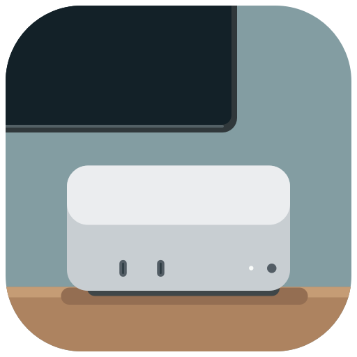

Couch Cube
Your Mac Console
Set up your Mac for gaming on the couch. Steam, retro games, controllers and game storage — in one simple app.
InstallerFor this Mac.
Open the DMG and drag the app to Applications. SSD packFor an external SSD.
Unzip onto your SSD, open the app and finish Setup.
Open the DMG and drag the app to Applications. SSD packFor an external SSD.
Unzip onto your SSD, open the app and finish Setup.
Choose a download from GitHub Releases.
Apple Silicon Mac · macOS 13 or newer · Early alphaNo games, BIOS or emulators included. Some Windows games need separate compatibility software. Not notarized yet. If macOS says it could not verify the app, copy it to Applications and run once in Terminal:
sudo xattr -dr com.apple.quarantine /Applications/CouchCube.app
View on GitHub